A collection of wrenches and pliers is a standard part of any toolbox, and they’re among the most useful tools for home improvement projects and auto repair. Perhaps the biggest challenge is selecting the right tool for the job. Wrenches are designed to fit nuts, bolts and other standard fasteners. Pliers grip, turn, squeeze and rotate round or irregularly shaped objects of most any size, from baling wire to barbecue grills.
One bit of advice: If you have a job that could be completed with either a wrench or pliers, use the wrench. You’ll get better results with an appropriately sized wrench, because it won’t slip and damage the fasteners you’re working on. Pliers are always more tempting to use because one pair can grip a wide range of fastener sizes. But doing so can quickly ruin machine parts by rounding off the heads of nuts and bolts. Use a wrench whenever possible, and save the pliers for when your wrenches won’t work.
A socket wrench set is invaluable because it’s so versatile. All sets include a wrench handle, an assortment of detachable sockets that fit different sizes of nuts and bolts, and a couple of extensions. Extensions lengthen the tool’s reach and snap in place between the wrench handle and the sockets. You can adjust socket wrench handles to turn the socket in either direction, using a button or lever on the handle.
If you purchase only one socket set for jobs such as vehicle maintenance or home improvement, buy a half-inch system. This measurement refers to the size of the square-drive recess in the base of each socket. Half-inch sockets are versatile and will handle most small- and medium-size jobs, delivering sufficient torque without breaking. A three-eighths-inch drive socket set doesn’t cost as much, but the socket will break more easily if you exert too much force on it. Another size is a three-quarter-inch drive socket. But unless you’ll be working on large fasteners frequently, you can save money by using another kind of wrench.
Socket sets are sold in two systems of measurement: English (measured in fractions of an inch) and metric (measured in millimeters). You can use an English-unit socket on a metric-unit bolt (or vice versa), but it won’t fit precisely. For low-torque situations, the difference in measurements usually won’t cause problems, but if you use a mismatched socket and have to exert much force, it will slip. But either way, both metric and English sockets will fit the same socket handle.
A socket wrench is an effective tool, but it won’t fit in some tight work spaces. Sometimes, a flat open-end wrench is the only tool that will turn a nut or bolt. Even in very tight spots, the classic U-shape of the open-end wrench usually will slip onto the fastener.
A combination wrench has an open end and an enclosed end, which is called a box end. The box end slips over the top of nuts and bolts instead of sliding in from the side like an open-end wrench. With either end, you’ll generally need to slip the enclosure over the fastener after every turn. But the box end delivers more torque with better grip on the bolt head, because the wrench head completely encircles the nut or bolt.
In an ideal world, we’d all use the “proper” wrenches and sockets on every nut and bolt, but you can’t always anticipate the right size of every tool you might need. An adjustable wrench, often called a Crescent wrench, can serve as an excellent stand-in, as long as you respect the limitations of the tool. A spiral-shanked worm gear turned by your thumb opens and closes the jaws, allowing you to grip nuts and bolts in a range of sizes. Just remember two things: You should only use adjustable wrenches that are in good condition with straight, flat jaws; and never use them on fasteners that require much torque. What adjustable wrenches offer in versatility, they take back in terms of strength and safety - they’ll slip off bolt heads if you apply too much force.
Allen wrenches, also called Allen keys, are specialty tools that fit hexagonal-shaped recesses you’ll find in the heads of small- and medium-size fasteners. These wrenches are the only tools that fit a hex recess, which you’ll often find on things that require small fasteners, such as bicycles. You can lose Allen wrenches easily because they’re so small - that’s why it makes sense to buy them in a set of keys that are hinged together into a group.
A pipe wrench or two also is a smart purchase. The large, adjustable jaws are oriented at 90 degrees to the handle of the tool, making it easy to apply a lot of torque to the largest nuts and pipe fittings. Think of these tools as adjustable wrenches made for heavy-duty situations. You’d never want to use a pipe wrench on the oil drain plug or wheel nuts of your vehicle, but they’re fine for pipe fittings that you expect to tighten only once. Their jaws are heavily grooved, and the adjustable head pivots slightly, tightening its grip as you turn the wrench.
Most pliers include handles that swivel together at a central point, allowing you to apply moderate pressure to round or irregularly shaped objects. Different jaw shapes and sizes allow pliers to function in many different situations, though not without limitations.
Lock-jaw pliers, often called Vise-Grips, are the most useful and common style. They grip well, the jaws can be locked closed at a preset width, and they are sold in a wide variety of styles. Lock-jaw pliers are great for holding together things such as irregular machine parts and slippery fasteners. Start with a pair of standard flat-jaw Vise-Grips and then add a pair of the needle-nose style (described below) when you can. If you’re tooling up for metal fabrication, wide-reach Vise-Grips are the ideal tool for holding together pieces of metal while you weld them.
Needle-nose pliers are finesse tools that let you sneak into confined spaces and deftly manipulate things that are too small for fingers. They come in both regular and lockable styles. The most useful have jaws 3 to 4 inches long and wire-cutting edges near the swivel point. You can buy larger or smaller pliers as needed. If you like to fish, needle-nose pliers are great for removing deeply embedded hooks from fish.
Adjustable-width pliers, often called Channellock pliers, use an adjustable jaw design to grip a wider variety of objects. The width of their closed jaws ranges from zero to 4 inches, depending on the size of pliers. The generic design has remained the same for years, but some newer models include a spring-loaded center swivel that locks the jaws into a half-dozen different widths. Unlike older styles that can slip into wider positions accidentally during use, the new designs always grip tightly. When you want to select a wider size of jaws, just push the pivot button, open or close the jaws to the desired range and then release the button to lock the tool.
Beyond the wrenches and pliers mentioned here, build your toolbox a piece at a time in response to your needs. A well-organized tool collection that fits your lifestyle and workload really does make home improvement a pleasure - and extends the life of your machinery.
You’ll pay slightly more for wrenches and pliers that have a lifetime warranty, but the extra cost is money well-spent. Many name-brand tools, such as those from Craftsman and Irwin, now come standard with an unlimited warranty, but ask about replacement details before you buy the tools. The best lifetime warranties allow over-the-counter exchange of broken tools with no questions asked.
- Contributing editor Steve Maxwell wrote about choosing the best fasteners in the April/May 2006 issue.
|
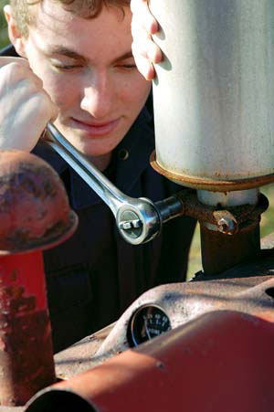 STEVE MAXWELL Twist, turn, tighten or loosen anything with nine essential wrenches and pliers. |
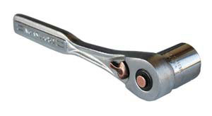 MATTHEW T. STALLBAUMER Socket wrench |
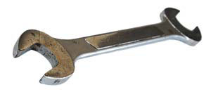 MATTHEW T. STALLBAUMER Flat open-end wrench |
|
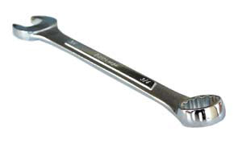 MATTHEW T. STALLBAUMER A combination wrench has an open end and an enclosed end, which is called a box end. |
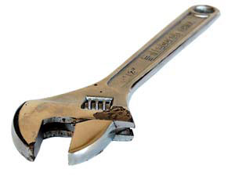 MATTHEW T. STALLBAUMER An adjustable wrench, often called a Crescent wrench. |
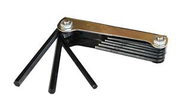 MATTHEW T. STALLBAUMER Allen wrenches are also called allen keys. |
|
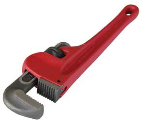 MATTHEW T. STALLBAUMER Pipe wrench |
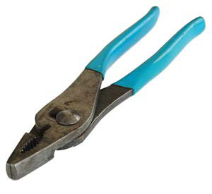 MATTHEW T. STALLBAUMER Basic pliers |
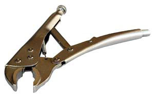 MATTHEW T. STALLBAUMER Lock-jaw pliers, often called Vise-Grips, are the most useful and common style of pliers. |
|
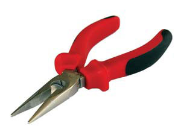 MATTHEW T. STALLBAUMER Needle-nose pliers are finesse tools that let you sneak into confined spaces. |
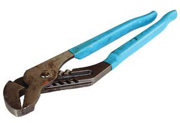 MATTHEW T. STALLBAUMER Adjustable-width pliers are also called Channellock pliers. |
|